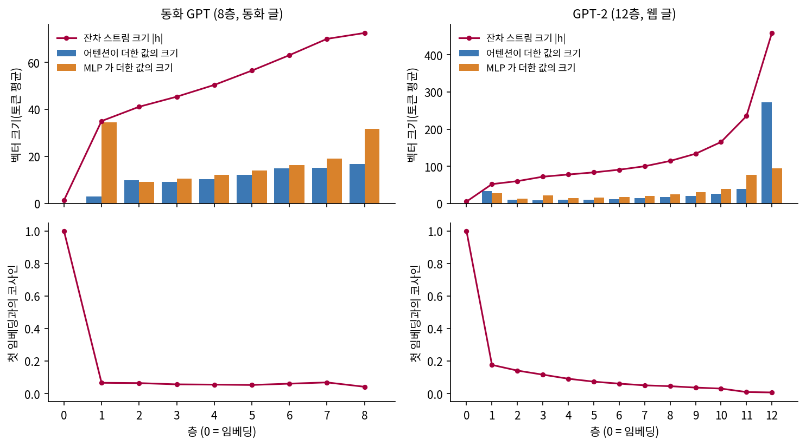
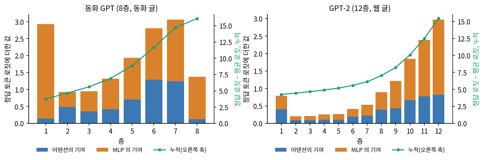

들여다보기 2: 층을 지나는 벡터
이 장의 물음
언어 모델에게 「The Eiffel Tower is located in the city of」를 주면 다음 토큰의 확률이 나온다. 우리가 보는 것은 마지막 층이 낸 확률뿐이지만 그 앞에 층이 여러 개 있으니, 답이 나오기 세 층 전의 모델은 무슨 토큰을 떠올리고 있었을까? 또 보통의 프로그램은 함수 하나를 빼면 돌아가지 않는데, 언어 모델에서 층 하나를 빼면 어떻게 될까?
임베딩 표에서 꺼낸 벡터는 층을 지나면서 계속 바뀌고, 마지막에 다음 토큰의 로짓이 된다. 이 장에서는 그 변화를 층마다 재고, 층을 일부러 망가뜨려 본다.
- 임베딩을 지난 벡터는 층마다 얼마나, 어떤 방향으로 바뀔까? 어텐션과 MLP 는 각각 무엇을 더할까?
- 중간 층의 벡터를 토큰으로 읽을 수 있을까? 읽어 보면 층마다 무슨 토큰을 떠올리고 있을까?
- 앞쪽 층이 하는 일과 뒤쪽 층이 하는 일은 다를까?
- 층 하나를 지우거나, 복제하거나, 이웃과 순서를 바꾸면 같은 입력의 결과는 어떻게 변할까?
- 첫 층은 왜 무너지고 가운데 층은 왜 버틸까? 끝 층은 어떨까?
잔차 스트림을 타고 올라가는 벡터
유도 헤드를 찾은 다음 주, 민준은 라운지 테이블에 공책을 펴고 임베딩을 공부하던 날의 쪽을 찾았다. 그 쪽 아래에 「만들고 나면 꼭 열어 보기」라고 적혀 있었다.

이거 아직 안 했어. 임베딩 표에서 꺼낸 벡터가 층을 지나면서 어떻게 바뀌나. 그때는 조각 평균까지만 봤으니까, 이번엔 8층을 지난 벡터에서 이웃부터 찾아보자.
이 장이 끝나면 우리는 동화 GPT 의 층마다 무슨 일이 일어나는지 숫자로 읽고, 어느 층을 지우면 루나가 무너지고 어느 층은 지워도 이야기를 쓰는지 알게 된다.
여러 토큰 낱말의 이웃: 8층을 지난 뒤
낱말을 문장 틀 여섯 개(「One day, ___」, 「She smiled at ___」 등) 끝에 붙이고, 마지막 조각 자리에서 8층이 낸 벡터(길이 512)를 평균했다. 「이름 8개」는 「 Tom」, 「 Lily」, 「 Ben」, 「 Mia」, 「 Sam」, 「 Max」, 「 Anna」, 「 Tim」과의 코사인 유사도 평균, 「다른 8개」는 「 tree」, 「 red」, 「 ran」, 「 happy」, 「 ball」, 「 cake」, 「 very」, 「 the」와의 평균이다(sources/mlp-lm/multitoken_similarity.out 4절).
[GPT 층 8 출력, 마지막 조각 위치]
낱말 이름 8개 다른 8개 가장 가까운 한 토큰 낱말 6
␣Minjun 0.31 0.20 ␣cob 0.48, ␣compass 0.46, ␣Cat 0.46, ␣hedge 0.45, ␣Bird 0.45, ␣fox 0.45
␣Seoyeon 0.73 0.38 ␣John 0.80, ␣Joe 0.80, ␣Jimmy 0.80, ␣Jake 0.79, ␣Jack 0.78, ␣Peter 0.78
␣Jisoo 0.74 0.39 ␣Bella 0.80, ␣Benny 0.80, ␣Chirpy 0.79, ␣Ella 0.79, ␣Billy 0.79, ␣Joe 0.79
␣Kevin 0.80 0.40 ␣Benny 0.86, ␣Joe 0.84, ␣Jack 0.83, ␣Remy 0.83, ␣John 0.83, ␣Billy 0.83
␣spaceship 0.58 0.38 ␣rocket 0.83, ␣aeroplane 0.78, ␣plane 0.78, ␣helicopter 0.77, ␣machine 0.74, ␣ship 0.73
␣pancake 0.58 0.45 ␣mushroom 0.72, ␣cable 0.70, ␣cushion 0.69, ␣gorilla 0.69, ␣panda 0.69, ␣mattress 0.69
여섯 낱말 가운데 넷은 제자리로 모였고 둘은 아니다. 「 Seoyeon」, 「 Jisoo」, 「 Kevin」은 이름 옆, 「 spaceship」은 「 rocket」 옆이고, 「 Minjun」은 「␣cob」, 「␣compass」 옆, 「 pancake」는 「␣mushroom」, 「␣cable」, 「␣gorilla」 옆이다. 같은 틀에서 꺼낸 벡터끼리라 공통 성분 때문에 두 칸이 함께 올라가므로(「다른 8개」도 0.38 안팎), 두 칸의 차이를 함께 본다. 낱말 여섯, 틀 여섯, 체크포인트 하나로 본 값이다. 평균과 달리 GPT 는 순서도 구별한다. 조각을 거꾸로 놓은 「 Minjun」과의 유사도가 조각 평균에서는 1.00 이고 8층 출력에서는 0.24 다(같은 파일 5절).

내 이웃은 왜 다 남자 이름이야.

그래도 이름이잖아. 나는 옥수수 속대야.

칠판은 봤잖아. 층마다 뭘 더한다는 건 알아.

뭘 더한다는 건 아는데 어떤 걸 더하는지를 몰라. 내 이름 조각이 왜 옥수수 속대가 됐는지도 모르고.
그 얘기는 그만해. 재 보자.
문제 1. 「 Minjun」은 왜 이름 옆에 오지 않나
동화를 쓰는 8층 GPT 의 8층 출력(마지막 조각 자리, 문장 틀 여섯 개 평균)에서 「 Seoyeon」, 「 Jisoo」, 「 Kevin」의 이웃은 이름인데 「 Minjun」의 이웃은 「␣cob」, 「␣compass」, 「␣Cat」이다. 「One day, Minjun」 다음에 올 토큰으로 GPT 가 꼽은 셋은 「e」 0.559, 「␣was」 0.145, 「h」 0.052 이고, 「One day, Seoyeon」 다음은 「␣was」 0.368, 「␣and」 0.170, 「␣wanted」 0.090 이다. 왜 「 Minjun」은 이름 옆에 오지 않을까? 조각 자리들의 벡터를 평균하면 나아질까?

한국 이름이라 모르는 거 아닐까요? 동화에 Minjun 이 나올 일은 없을 테니까요.

아니, Seoyeon 도 한국 이름인데 John 옆에 갔잖아. 그건 이유가 못 돼.

다음 토큰 확률을 보세요. GPT 는 「Minjun」 다음에 무엇이 올 거라고 보나요?

「e」가 0.559… 공백 없는 「e」면 낱말이 이어진다는 거네요. 「Minjune」처럼요.

그럼 「un」 자리의 벡터는 어떤 상태일까요?

낱말을 다 읽은 상태가 아니라 아직 읽는 중인 상태요. Seoyeon 다음에는 「␣was」를 꼽으니까, 거기서는 낱말이 끝났다고 본 거고요.
그럼 마지막 자리 하나만 보지 말고 조각 자리 넷을 평균하면 되겠다. 다 읽었든 아니든 네 조각이 다 들어가니까.
평균만으로는 모자라요. 조각 위치 평균에서 Minjun 은 이름과의 평균이 0.17 이고, Seoyeon 도 0.73 에서 0.51 로 내려가요. 더 큰 BERT 도 추가 학습 없이 출력을 평균하면 상관 54.81 로, GloVe 평균보다 낮았어요.
내 이름은 아직 쓰는 중인 걸로 보였구나. 조교가 보고서 제목 「Minjun」을 보고 「제목이 덜 끝났네」 하며 채점을 미룬 거예요. 제목이 마지막 조각 자리 벡터, 조교가 GPT 고요.
층마다 나눠 돌리기
여덟 층을 쌓은 동화 GPT 는 위치마다 폭 512 의 벡터 h 하나를 들고 층을 지난다. 잔차 스트림에서 본 대로 층은 h 를 지우지 않고 더하기만 하는데, 한 층 안에서 더하는 일이 두 번 있다. 어텐션이 벡터 하나를 더하면 그 합을 읽은 MLP 가 또 하나를 더하므로, 마지막 h 는 첫 임베딩에 층마다의 두 벡터를 모두 더한 합이다.
훅을 걸 것도 없이 블록의 두 줄을 풀어 쓰면 항을 하나씩 꺼낼 수 있다.
# sources/layers/common_layers.py 에서 발췌
def run_layers(m, x):
pos = torch.arange(x.size(1), device=x.device)
h = m.wte(x) + m.wpe(pos)
h0 = h
A, B, H = [], [], [h0]
for blk in m.blocks:
a = blk.attn(blk.ln_1(h))
h = h + a
b = blk.mlp(blk.ln_2(h))
h = h + b
A.append(a); B.append(b); H.append(h)
return h0, A, B, H
타이니스토리즈 검증 글에서 무작위로 자른 256 토큰 조각 64 개(글 씨앗 셋)를 넣고 토큰마다 평균한 값이 아래 표다(sources/layers/residual_stream.out). 층 0 은 임베딩이다.
## tiny, 글 tiny: 글 씨앗 3 평균 (씨앗마다 64 x 256 토큰)
층 |h| cos(h,h0) |어텐션| |MLP| 더한양/|h|
0 1.3 1.000
1 35.0 0.066 2.9 34.4 27.504
2 41.1 0.064 9.9 9.2 0.377
3 45.4 0.056 9.1 10.4 0.323
4 50.4 0.055 10.3 12.1 0.342
5 56.5 0.053 12.0 14.0 0.357
6 63.0 0.061 14.9 16.2 0.382
7 70.0 0.068 15.2 19.1 0.378
8 72.5 0.042 16.8 31.7 0.530
표의 첫 칸부터 본다. 임베딩의 크기는 1.3 인데 첫 층의 MLP 혼자 34.4 짜리 벡터를 더해서, 층 1 을 지나면 h 의 크기가 35.0 이 되고 첫 임베딩과의 코사인 유사도는 0.066 으로 떨어진다. 그 뒤로 층마다 h 크기의 3분의 1 정도를 더하면서 크기는 72.5 까지 천천히 자라고, 코사인 유사도는 0.05 언저리에 머문다. 임베딩 벡터가 조금씩 다듬어져 올라가는 그림을 생각했다면 틀린 것이고, 실제로는 임베딩이 첫 층에서 훨씬 큰 벡터에 묻힌 뒤 그 큰 벡터를 뒤 층들이 고쳐 간다.
그럼 임베딩은 층 1 에서 거의 사라지는 거야? 코사인이 0.066 이면 직각에 가까운데.

사라지진 않지. 더하기만 하니까 h 안에 그대로 있어. 다만 72 짜리 벡터 안의 1.3 이라 코사인으로는 안 보이는 거고. 그리고 층 1 의 MLP 는 임베딩을 읽어서 34 짜리를 만들었으니까, 그 안에 토큰 정보가 없을 리가 없어.
작은 모델의 결과가 작은 모델만의 일인지 가리려고 GPT-2 공개 가중치도 나란히 잰다. 그 가운데 가장 작은 판(12층, 폭 768, 파라미터 약 1억 2,400만 개)은 구조가 우리 GPT 와 같아서 sources/common/gpt.py 에 가중치를 그대로 부어 넣을 수 있다. 같은 측정을 해 보아도 임베딩 크기 4.7, 층 1 뒤 51.7, 코사인 유사도 0.176 으로 그림이 비슷하다. 다른 점은 마지막 층으로, GPT-2 의 층 12 는 어텐션이 272.1 을 더해 h 가 458.9 까지 튀어 오른다.

더한 값이 정답 로짓을 올리는가
크기만 봐서는 더한 값이 다음 토큰 예측에 도움이 되는지 알 수 없지만, h 가 합이라는 점을 쓰면 항마다 정답에 얼마나 보탰는지 잴 수 있다. 정답 토큰의 로짓은 마지막 h 를 층 정규화한 벡터와 언임베딩 행렬의 정답 행의 내적인데, 내적은 합을 나눠 가지므로 항마다 따로 계산해 더하면 된다. 층 정규화의 표준편차 σ(시그마)는 마지막 h 에서 잰 값으로 고정해 선형으로 만들었고, 확률에는 로짓의 차이만 쓰이므로 언임베딩의 정답 행에서 전체 행 평균을 뺀 벡터와 내적한다.
항을 모두 더하면 실제 값과 맞아야 하는데, 출력의 점검 줄에서 16.09 와 16.09 로 맞았다. 정답 토큰의 로짓이 평균보다 16 넘게 크고, 그 차이를 층들이 나눠 보탠 것이다.
정답 로짓 기여: 임베딩 0.02, 바이어스 β 0.78, 합계 점검 16.09 = 실제 16.09
층: 어텐션 기여 / MLP 기여 / 누적
1: 0.14 2.80 3.73
2: 0.48 0.45 4.66
3: 0.35 0.60 5.60
4: 0.42 0.90 6.92
5: 0.70 1.23 8.85
6: 1.29 1.51 11.66
7: 1.24 1.82 14.72
8: 0.12 1.25 16.09
임베딩이 직접 보탠 것은 0.02 뿐이고, 모든 층이 조금씩 정답 로짓을 올린다. 벡터 h 는 잔차 스트림을 타고 올라가면서 다음 토큰 예측에 맞는 변형을 층마다 더해 가는데, 그 변형 하나하나가 어텐션과 MLP 가 만든 값이다. 누적이 고르게 늘지는 않아서 층 1 이 2.94 를 보탠 뒤 층 2~4 는 층마다 1 안팎을 보태고, 층 6·7 은 다시 3 안팎을 보탠다. 여덟 층의 어텐션 기여를 더하면 4.74, MLP 기여를 더하면 10.56 으로 MLP 가 두 배 정도 많이 보탠다.
GPT-2 에서는 쏠림이 더 심해서 층 2~5 는 층마다 0.2 안팎이고 층 10~12 가 1.86, 2.40, 2.97 을 보탠다(같은 출력). 평균을 낸 값이니 토큰마다 이렇게 고르게 오른다는 뜻은 아니다.

문제 2. 코사인이 0.04 면 임베딩을 잊은 걸까
동화 GPT 의 마지막 h 와 첫 임베딩의 코사인 유사도는 0.042 이고, 두 벡터의 크기는 72.5 와 1.3 이다. (가) h 가 첫 임베딩 h⁽⁰⁾ 에 그와 직각인 벡터를 더한 것이라면 코사인 유사도는 크기만으로 얼마가 되어야 하는가? (나) 실제 값 0.042 와 비교하면 무엇을 알 수 있는가? (다) 코사인 유사도가 작다는 것으로 「모델이 지금 토큰을 잊었다」고 말할 수 있는가?
(가)는 그림으로 해 볼게. h⁽⁰⁾ 에 직각인 벡터를 더하면 h⁽⁰⁾ 방향 성분은 h⁽⁰⁾ 그대로니까, 코사인은 h⁽⁰⁾ 성분을 h 의 크기로 나눈 거야. 1.3 ÷ 72.5 = 0.018.
실제는 0.042 니까 두 배 넘게 크네. 더한 벡터들이 h⁽⁰⁾ 방향으로 조금 기울어 있었다는 건가?
토큰마다의 평균이라 한 번에 나눌 수는 없지만, 방향은 그렇게 읽어도 돼요. 그런데 (다)가 진짜 물음이에요. 코사인 유사도가 재는 것은 무엇이고, 「잊었다」는 말이 뜻하는 것은 무엇이죠?
코사인은 h⁽⁰⁾ 라는 방향 하나에 얼마나 남았는지만 봐요. 그런데 층 1 의 MLP 가 임베딩을 읽어서 다른 방향에 34 짜리로 다시 적었다면, 토큰 정보는 그 방향에 더 크게 있겠네요.

그래요. 번역본에 원문 낱말이 하나도 없다고 내용이 없어진 것은 아니죠. 그럼 토큰 정보가 있는지는 무엇으로 재면 될까요?
그 벡터에서 토큰을 읽어 내 보면 되겠네요. 읽히면 있는 거니까요.
문제 3. 가장 크게 더한 층이 가장 많이 보탠 층일까
동화 GPT 에서 MLP 가 더한 값의 크기는 층 7 이 19.1, 층 8 이 31.7 이다. 정답 로짓 기여는 층 7 이 1.82, 층 8 이 1.25 다. (가) 크기당 기여를 층마다 계산하라. (나) 층 8 의 MLP 는 커다란 벡터로 무엇을 하고 있을 수 있는가? 어떤 값을 재면 가려낼 수 있겠는가?
계산부터. 층 7 은 1.82 ÷ 19.1 = 0.095, 층 8 은 1.25 ÷ 31.7 = 0.039. 절반도 안 돼.
크기는 큰데 정답 방향으로는 조금만 간다는 거네. 나머지는 어디로 간 거지? 정답이 아닌 토큰을 누르는 데 썼을 수도 있잖아. 로짓은 차이만 쓰이니까 정답을 올리는 거랑 다른 걸 내리는 게 효과가 같을 거고.
맞아요. 지금 숫자로 말할 수 있는 것은 층 8 의 MLP 가 크기에 비해 정답 방향으로 적게 보탠다는 데까지예요. 더 말하려면 원래 모델이 1위로 꼽던 오답 토큰의 로짓에 층 8 이 얼마나 보탰는지 재면 돼요. 음수면 누른 거예요.